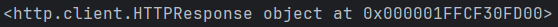
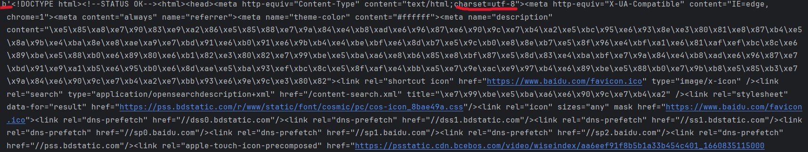
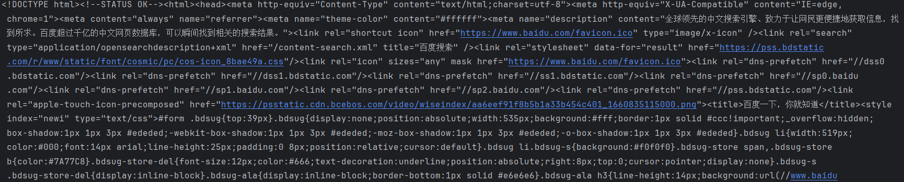
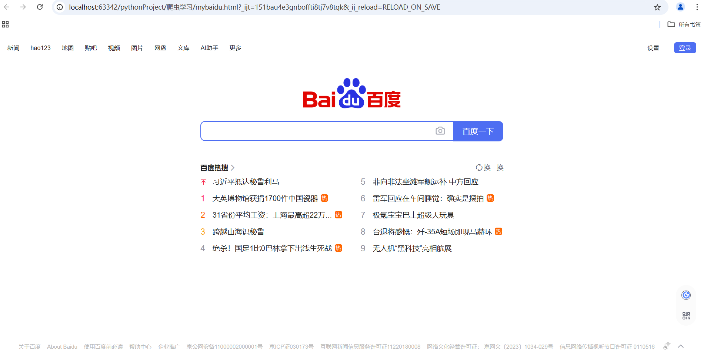

爬虫学习笔记
使用python内置库urllib来向网页发出请求
1 | from urllib import request |
通过urlopen函数实现对目标url的访问，并获取服务器返回的数据。
1 | resp = request.urlopen(url) |
我们可以看一下resp是什么
1 | print(resp) |
得到下列输出

resp是一个HTTP协议下的响应对象
通过read()函数获取resp对象的内容
1 | print(resp.read()) |

结果把整个百度官网的html信息全部返回到python终端的输出窗口了。我画红线的地方是b’，这代表bytes字节型，简言之，这种类型的数据会把中文进行编码，因此输出的这一大坨中我们不会看到任何一个中文汉字。通过检查html信息可以发现编码方式为utf-8。所以可以通过转码将网页信息转换为utf-8格式。
1 | print(resp.read().decode("utf-8")) |

可以新建一个html文件把从resp中读取的内容保存起来。
1 | with open("mybaidu.html",mode="w",encoding="utf-8") as f: |
我们运行生成的html文件就会得到百度的页面

本博客所有文章除特别声明外，均采用 CC BY-NC-SA 4.0 许可协议。转载请注明来源 五色！